class: center, middle <!-- ## Master's Thesis --> ###Combining Top-Down and Bottom-Up Processes to Extract Space-Time Volumes of Interest from Video ##### Computer Vision Winter Workshop 2019 <br> Filip **Ilic**<br> Axel **Pinz** <br> <br> <small><center> <br>Graz University of Technology</center> <br> --- layout: true <div class="footer"> <b>Filip Ilic</b> <i>Combining Top-down and Bottom-Up Processes to Extract Space-Time Volumes of Interest from Video</i></div> --- ### Representing objects in video <center><video width="31.5%" controls loop> <source src="figures/girl.mp4" type="video/mp4"></center> <table style="width:100%; table-layout:fixed;"> <tr> <th><video width="95%" controls loop > <source src="figures/tsp_girl.mp4" type="video/mp4"> </video> </th> <th><video width="95%" controls loop > <source src="figures/mrcnn_girl.mp4" type="video/mp4"> </video> </th> <th><video width="95%" controls loop > <source src="figures/mine_girl.mp4" type="video/mp4"> </video> </th> </tr> <tr> <td><center><small><b>Temporal Superpixel</b><br>Chang et al. CVPR13</small></center></td> <td><center><small><b>Mask R-CNN</b><br>He et al. ICCV17</small></center></td> <td><center><small><b>Our approach</b><br></small> </center></td> </tr> </table> --- ### Overview Top-down focus - Use 'anchors' to focus on salient objects Bottom-up grouping - Describe objects and their parts -- Result of our method <center><video width="55%" controls loop> <source src="figures/rollerblade_backproj.mp4" type="video/mp4"> </video></center> --- count: false ### Overview Top-down focus - Use 'anchors' to focus on salient objects Bottom-up grouping - Describe objects and their parts Result of our method <center><p>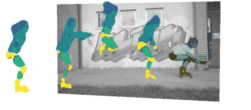</p></center> --- ### Overview <p>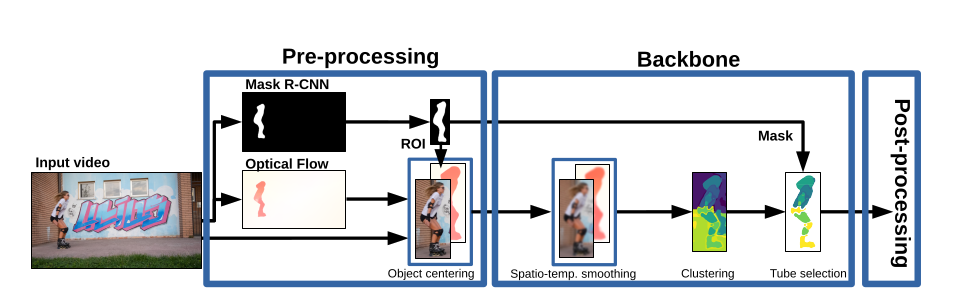</p> Mask R-CNN trained with COCO dataset (80 object categories) In principle our approach works with any kind of object detector --- ### Preprocessing Object-centered coordinate system * Mask R-CNN: use mask to find crop object * Flownet2.0: Optical flow of that region Video: think of it as stacked images (volumetric) <br><br><br><br> <p>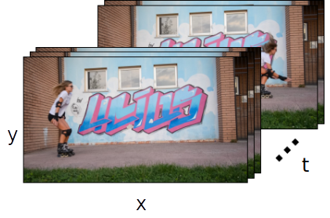</p> <p>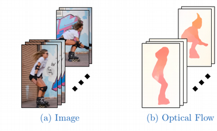</p> --- ### How to decompose the object? Combine apearance and flow! -- <small> \\[ \phi(x,y,t)= \begin{bmatrix}\alpha (x,y,t)^T \\\\ (L,a,b)^T \\\\ \beta (\hat{F}_x, \hat{F}_y)^T\end{bmatrix}, \text{dimensionality } 8 \times 1 \\] </small> * Our goal: Represent certain parts in that subvolume. * Therefore need a way to set the **scale** --- ### Scale selection in Gaussian scale space $$\mathscr{L}(\cdot;\sigma{^2}, \tau{^2}) = g(\cdot; \sigma{^2}, \tau{^2}) * f(\cdot)$$ `\(\sigma\)` ... spatial scale `\(\tau\)` ... temporal scale -- #### Examples <center> <div> <video width="45%" controls loop autoplay> <source src="figures/sig_vid.mp4" type="video/mp4"> </video> <video width="45%" controls loop autoplay> <source src="figures/tau_vid.mp4" type="video/mp4"> </video> </div> </center> <center><small>Choice of the scale determines which parts are prominent</small></center> --- ### Scale selection in Gaussian scale space $$\mathscr{L}(\cdot;\sigma{^2}, \tau{^2}) = g(\cdot; \sigma{^2}, \tau{^2}) * f(\cdot)$$ `\(\sigma\)` ... spatial scale `\(\tau\)` ... temporal scale #### So how do these different scales look like? -- <video width="100%" loop controls> <source src="figures/jumpingjack.mp4" type="video/mp4"> </video> What is the correct scale of an object? * Depends on the application * We provide a framework that allows the choice the appropriate scale --- ### Scale selection in Gaussian scale space $$\mathscr{L}(\cdot;\sigma{^2}, \tau{^2}) = g(\cdot; \sigma{^2}, \tau{^2}) * f(\cdot)$$ `\(\sigma\)` ... spatial scale `\(\tau\)` ... temporal scale #### Automatic scale selection based on `\(\sigma\)` ~ Object size `\(\tau\)` ~ Object motion --- ### Space-Time Volumes of Interest #### Recap * Descriptor for each pixel <center></center> --- count:false ### Space-Time Volumes of Interest #### Recap * Descriptor for each pixel <small> \\[ \phi(x,y,t)= \begin{bmatrix}\alpha (x,y,t)^T \\\\ (L,a,b)^T \\\\ \beta (\hat{F}_x, \hat{F}_y)^T\end{bmatrix} \\] </small> -- * Scale selection $$\mathscr{L}(\cdot;\sigma{^2}, \tau{^2}) = g(\cdot; \sigma{^2}, \tau{^2}) * f(\cdot)$$ -- * _Next_: Clustering --- ### Space-Time Volumes of Interest #### Structures after SLIC clustering <center><p>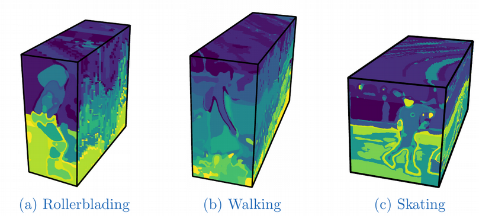</p></center> Background structures still present --- ### Space-Time Volumes of Interest #### Removing background structures We use Mask R-CNN masks to constrain the chosen clusters <br> <br> <center><p>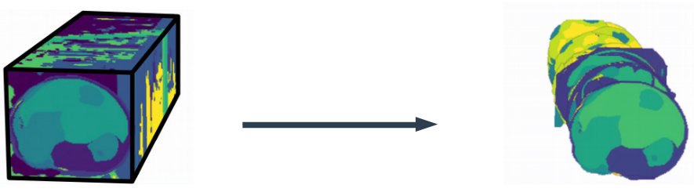</p></center> <br> The result is a **Space-Time Volume of Interest** --- ### Space-Time Volumes of Interest #### Object-centered coordinate system <center> <video height="210px" controls loop> <source src="figures/rollerblade_object_white.mp4" type="video/mp4"> </video> </center> * Relative motion of object parts * Centered around the centroid of the object --- ### Space-Time Volumes of Interest #### Viewer-centered coordinate system <center> <video height="300px" controls loop> <source src="figures/rollerblade_viewer_white.mp4" type="video/mp4"> </video> </center> * Visualization of the object's trajectory * Trajectories of the individual object parts --- ### Technical Considerations #### Dense Method * Uses masks in every frame * **Fails** if a single mask extraction fails -- #### Sparse Method * Use masks every 15 frames and track the object * Only different Pre-processing <center><p>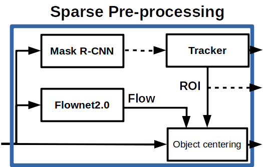</p> <!-- <table style="width:100%; table-layout:fixed;"> <tr> <th><center><p>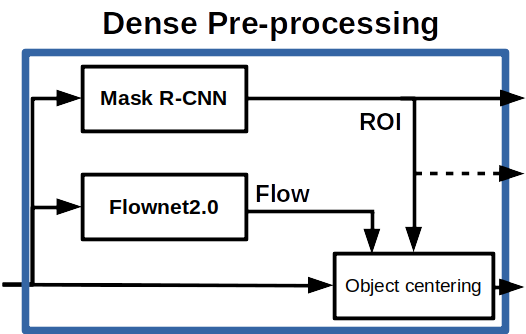</p></center> </th> <th><center></center> </th> </tr> </table> --> --- ### Evaluation #### DAVIS Dataset * 50 videos, average duration ~70 frames * Ground truth segmentation masks * Classes which Mask R-CNN can recognize * Humans, Animals, Cars, Bikes, etc. #### Metrics * Segmentation Accuracy (3D) "How much do we get right?" * Under-segmentation Error (3D) "How much do we get wrong?" --- ### Evaluation #### Quantiative Results * Able to evaluate 47/50 videos with **sparse**, and 39/50 with **dense** method. -- * Segmentation performance average with automatic scale selection * Little differece beween **sparse** and **dense** method * Lower Accuracy than Mask R-CNN * Lower Under-segmentation Error than Mask R-CNN <center></center> -- <br> <center><video width="70%" controls loop autoplay> <source src="figures/jumpingjack.mp4" type="video/mp4"> </video> </center> <center><small>Segmentation performance highly depends on our automatic scale selection</small></center> --- ### Evaluation ####Qualitative Results <center> <table style="width:60%; table-layout:fixed;"> <tr> <th><video width="95%" controls loop id="lucia_master" onplay="play_slaves('lucia_slave')" onpause="pause_slaves('lucia_slave')"> <source src="figures/lucia_I.mp4" type="video/mp4"> </video> </th> <th><video width="95%" loop class="lucia_slave"> <source src="figures/lucia.mp4" type="video/mp4"> </video> </th> <th><video width="95%" loop class="lucia_slave"> <source src="figures/lucia_mrcnn.mp4" type="video/mp4"> </video> </th> <th><video width="95%" loop class="lucia_slave"> <source src="figures/lucia_gt.mp4" type="video/mp4"> </video> </th> </tr> <tr> <td><center><small><b>Input</b></small></center></td> <td><center><small><b>Ours</b></small></center></td> <td><center><small><b>Mask R-CNN</b></small></center></td> <td><center><small><b>Ground Truth</b></small></center></td> </tr> </table> </center> * Natural looking object contours, as opposed to blobby * Able to deal with small occlusions (legs) * Sometimes artefacting --- ### Discussion #### Issues with automatic parametrization We require contrast in appearance or flow. <center><p>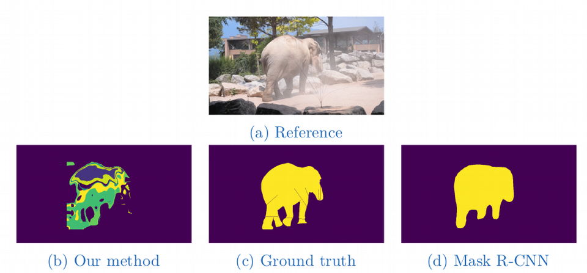</p></center> --- ### Discussion #### Where does it work well? <!-- <center><p>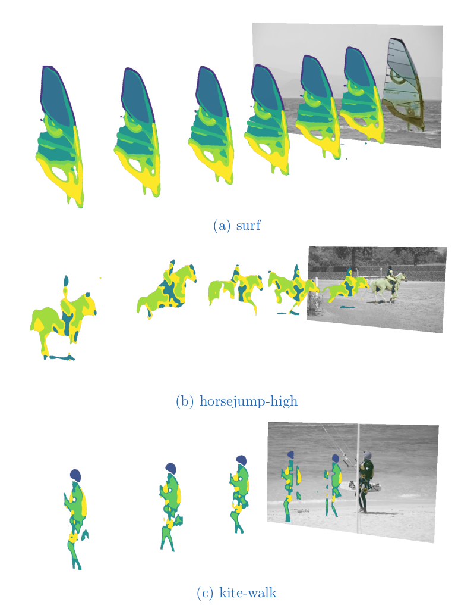</p></center> --> <center> <p>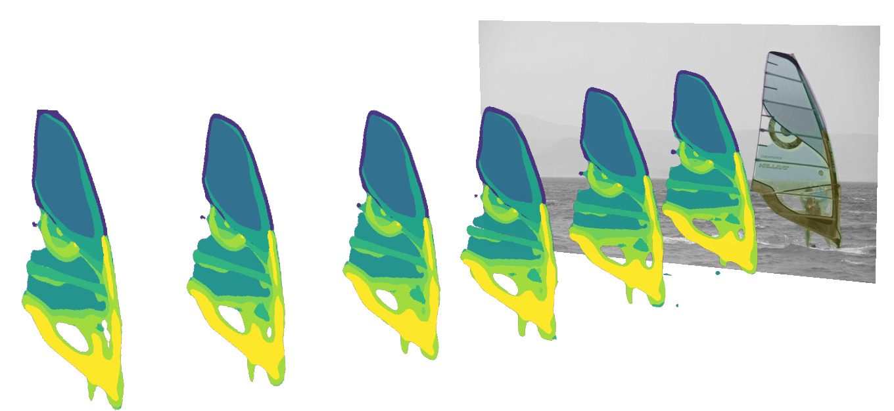</p> </center> <center> <p>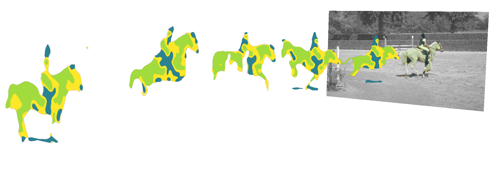</p> </center> <center> <p>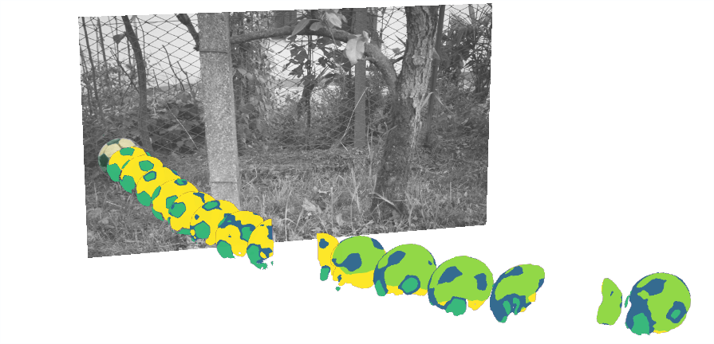</p> </center> --- ### Discussion #### Visualizations Volumetric representation allows for slicing along any of its axis <center><p>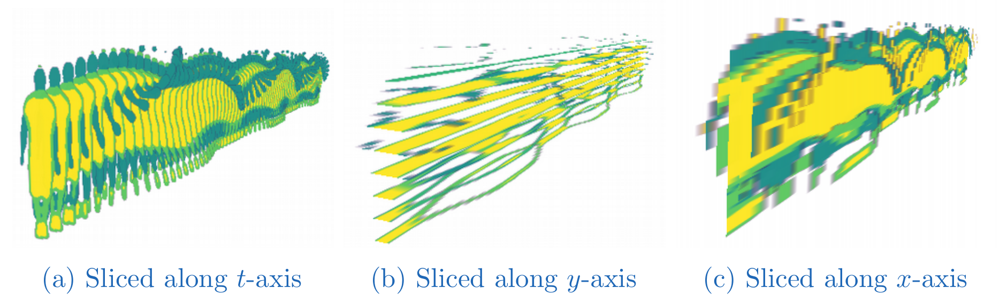</p></center> -- <br> * (b) emphasizes the oscilating motion pattern of the legs * (c) emphasizes the torso and head respectively modeled by one _tube_. --- ### Conclusion #### Representation of salient objects * Decomposition into meaningful parts * Variable (per object) scale - with proposed automatic scale selection * Shown viability to use sparse masks (anchors) to provide focus on objects #### Different frames of reference * Object-centered: Emphasizes relative motion between object parts * Viewer-centered: Dynamics of a scene and possibly trajectories #### Novel representation that might be useful for other applications